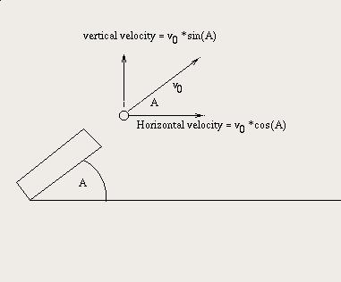

The very first application for the first electronic computer was to compute artillery tables for cannons in World War II. In this lab, we'll implement a couple of programs that compute a simple version of this problem.
Using a terminal window, copy the directory named Lab06 from /usr/people/classes/CS160/labs into your CS160 directory. Use the tree command to verify that the directory structure for your local copy of Lab06 matches the following:
Lab06
|-- Cannon.java
|-- Cannon.jpg
|-- Prelab.html
`-- solution
Suppose that a cannon ball is shot from a cannon at an angle A as pictured below. The ball will shoot out at that angle and will eventually drop to earth some distance away from the starting point. If the ball shoots at an initial velocity of v0, and if the vertical acceleration due to gravity g is −9.80665 meters per second per second, then the vertical component of the initial velocity vvert will be, as shown in the diagram below, v0 sin A, and the horizontal component, vhoriz will be v0 cos A. The formula for the height of the cannon ball after t seconds, assuming no friction will be:
height(v0 , A, t) = vvert t + g t 2 ⁄ 2
Similarly, the formula for the horizontal distance the cannon ball has moved after t seconds is:
dist(v0 , A, t) = vhoriz t
provided that t isn't past the time when the cannonball hits the ground.

Using the supplied Cannon.java template, complete the
height(v0 , A, t) method and
add the dist(v0 , A, t) method
using the formulas above. Note that it uses the name GRAVITY
for the constant g. The Math class has public static
methods Math.sin(theta) and Math.cos(theta) that
will compute the trigonometric functions you need. These functions
require, however that the angle be in radians, so the range of valid
angles runs from 0 to π/2 radians, which is equivalent to 0 to 90
degrees. The Math class also defines a constant
Math.PI, which is the closest approximation to π
possible in the double type; you should always use Math.PI
rather than your own approximation of π. You can use this constant as
part of the formula to convert degrees to radians, or you can use the
toRadians() method of the Math class.
Test your program to assure yourself that it works correctly. Add appropriate comments if you have not already done so. Show your working program and code to the lab instructor or TA at the beginning of lab.